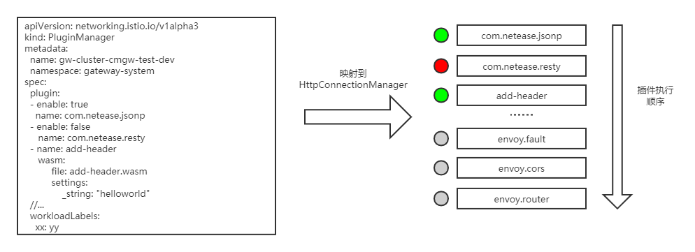
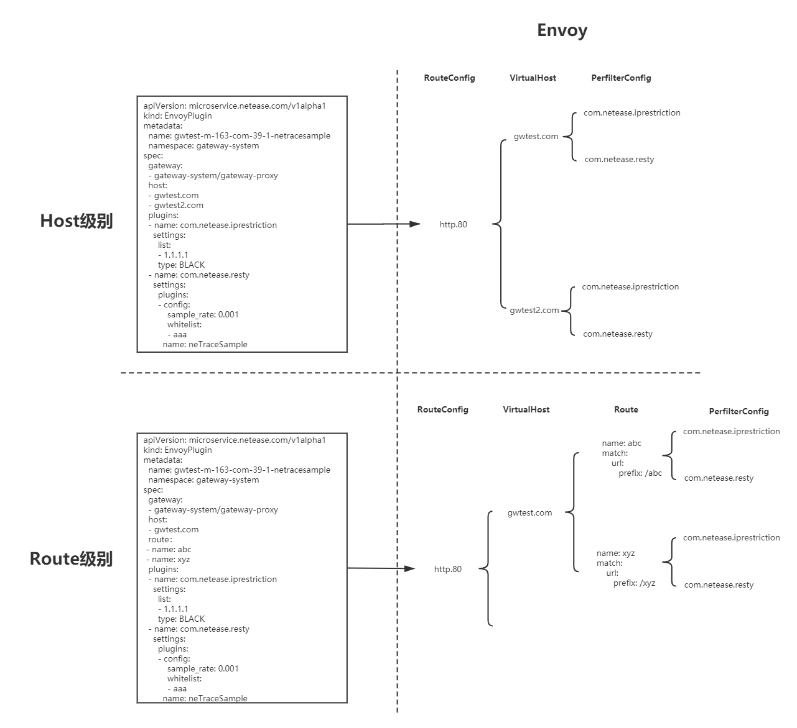

在网关场景下，流量管理比较复杂，需要使用定制化插件来处理流量，在开发Slime的插件模块之前，插件扩展只能通过envoyfilter来实现，envoyfilter是xds层面的配置，管理和维护这样的配置需要耗费大量的精力，同时出错率也极高。
于是我们决定在envoyfilter上层做一层面向插件管理的抽象。xds中关于HTTP插件的配置有两段，一部分在LDS中，作为HttpConnectionManager的SubFilter，它决定了哪些插件将被加载以及插件的执行顺序。另一部分在RDS中并且有两个粒度，分别是virtualHost粒度的perFilterConfig以及route粒度的perFilterConfig，这部分决定了当前Host或者是路由需要进行的插件行为。
LDS中的部分被我们抽象为PluginManager，我们可以通过enable选项启停插件，同时，不同插件在PluginManager中的顺序也对应着插件的执行优先级。而且PluginManager不仅可以管理内建的c++插件也可以管理wasm插件。

RDS中的部分被抽象为EnvoyPlugin，通过EnvoyPlugin的Host/Route字段可以设置插件配置的生效范围。EnvoyPlugin更加贴合网关的配置模型，在网关的控制台上，后端服务往往被映射为某个Host下的某几个API接口，例如我们需要为服务A配置黑白名单插件以及trace采样插件，A服务在网关上的接口为/abc和/xyz，针对该服务的插件配置就会被映射为：
apiVersion: microservice.netease.com/v1alpha1
kind: EnvoyPlugin
metadata:
name: gateway-proxy-svc-a
namespace: gateway-system
spec:
gateway:
- gateway-system/gateway-proxy
host:
- gwtest.com
route：
- name: abc
- name: xyz
plugins:
- name: com.netease.iprestriction
settings:
list:
- 1.1.1.1
type: BLACK
- name: com.netease.resty
settings:
plugins:
- config:
sample_rate: 0.001
whitelist:
- aaa
name: neTraceSample
EnvoyPlugin不关心每个插件的具体配置，具体配置会被放在type.struct结构中透传处理，它更关心的是插件生效范围，使用者可以将插件配置在其他维度中做聚合（就像例子中以Service的维度做聚合），这样做一方面更加贴合插件使用者的习惯，另一方面也降低了上层配置的冗余，下图表面了EnvoyPluing在xds层面的映射关系，虽然xds层面仍旧会展开，但至少在管理它们的时候我们面对的是一个有序聚合的数组而非一颗庞大的插件树：
